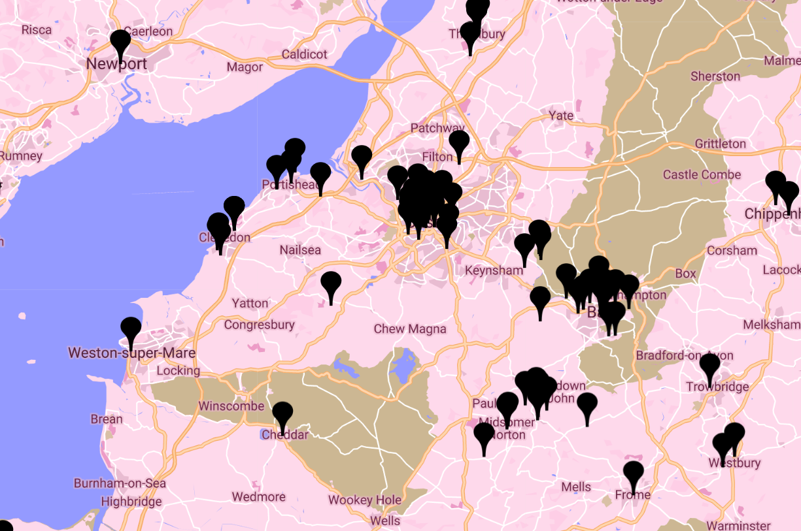
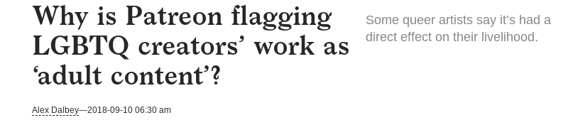
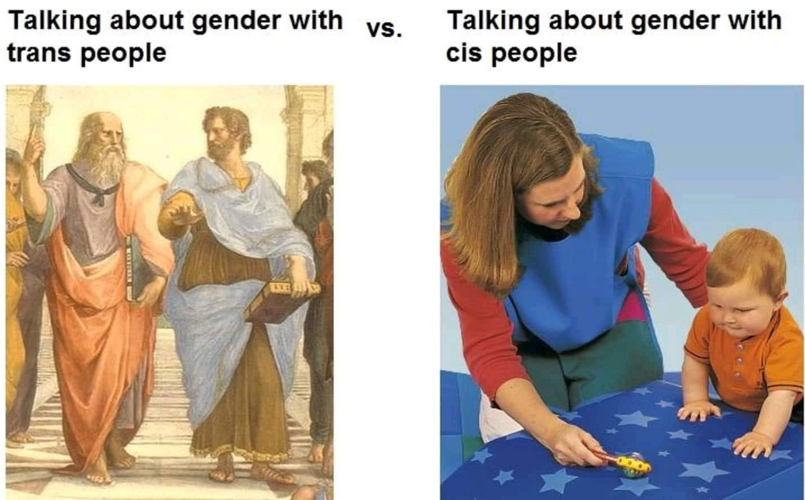

Queer Spaces &
Virtual Spaces
- I'm from Samsung Internet, we're a browser for Android phones. You can find us in the play store.
- Our main focuses are privacy and performance
- We also focus on some new Web APIs such as Progressive Web Apps, Web Payment, and Virtual Reality in the Web
- We even have a VR web browser!



Hello World